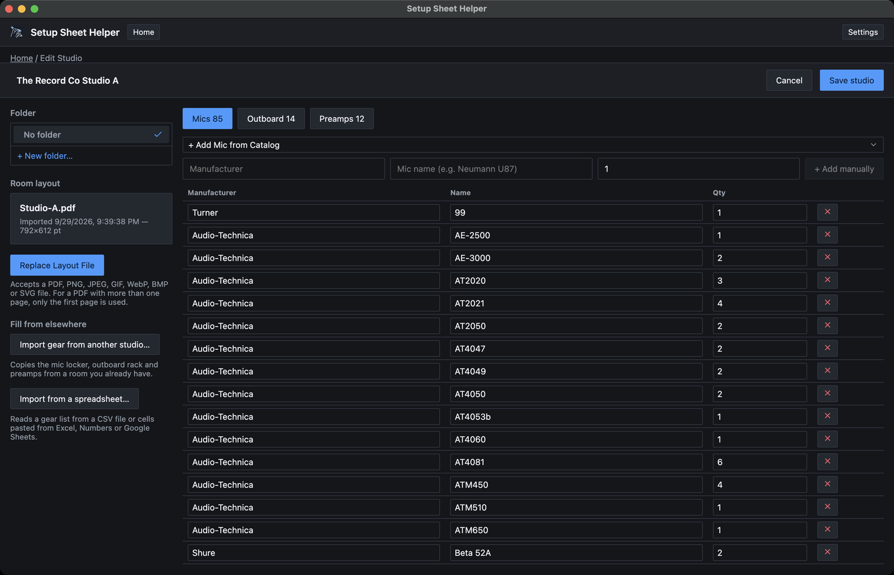
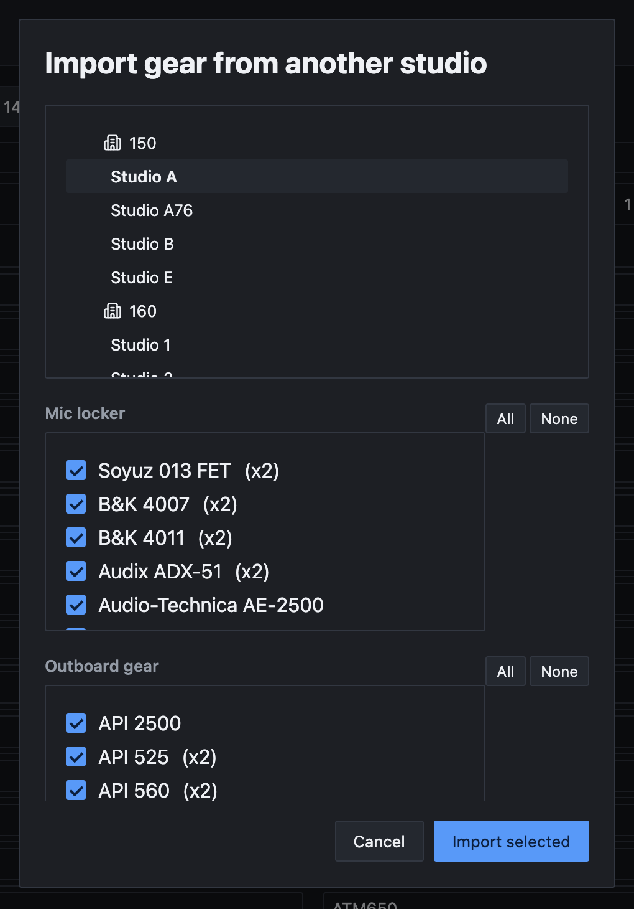
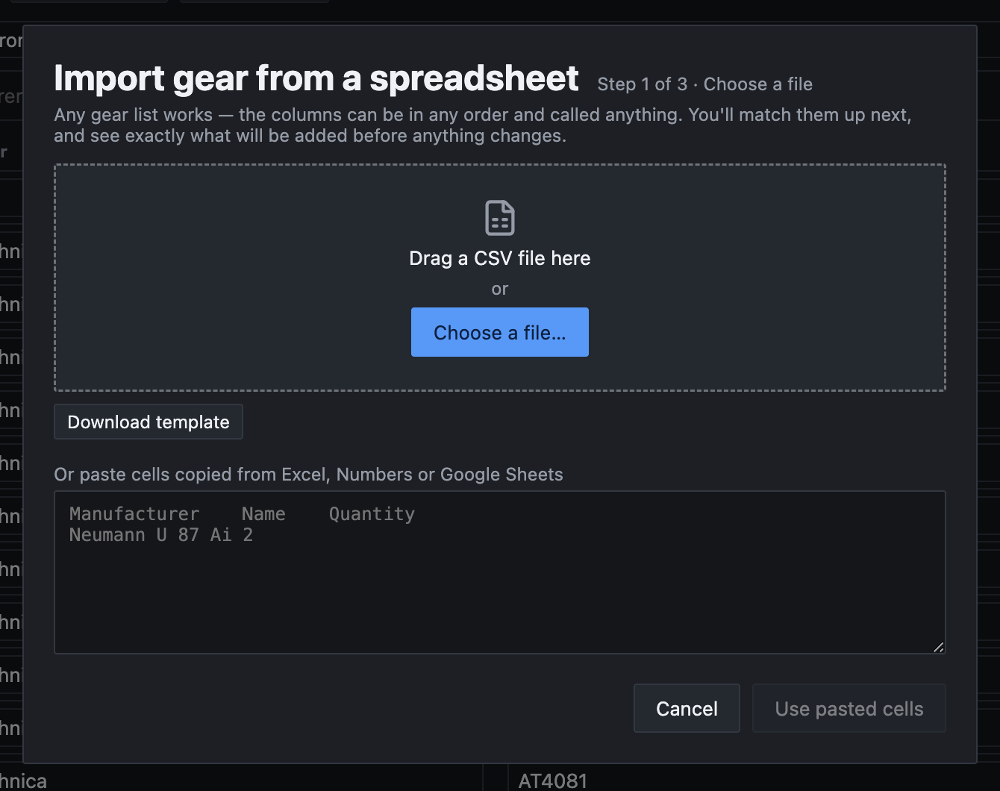
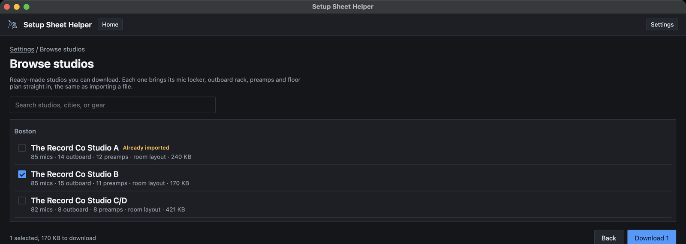

Part 6
Setting up your studio
A studio is a room's gear list and floor plan, set up once. Every setup you make from it starts with that gear in the pickers and that floor plan in Layout Mode. This part shows how to build one by hand, how to fill it fast, and how to keep it up to date.
What a studio holds
- Mics, outboard and preamps, with how many of each the room has. Those counts are what the pickers use to show 2/5 in use and to gray out gear that's all taken. Part 2 covers the pickers.
- A room layout: the floor plan Layout Mode draws on. Part 4 covers Layout Mode.
- A folder, if you want one, so the home screen stays tidy. Part 8 covers folders.
If you turned on Berklee features, Berklee's rooms are already set up for you and you can skip this part. They're read-only. Part 9 explains them.
Creating a studio
-
Open the studio editor
On the home screen, click + New studio beside New Setup From Studio Template. If you have no studios yet, the section shows Set up your studio once, reuse it every session with its own + New studio button.
-
Name the room
The editor opens with Untitled Studio in the top bar. Click the name and type your own.
-
Add gear and a floor plan
Fill in the Mics, Outboard and Preamps tabs (below). If you have a floor plan, upload it under Room layout in the left rail. Choose a Folder there too if you like.
-
Save
Click Save studio. You're back on the home screen, and the new studio is ready to pick.

Gear changes are saved all at once. Nothing in the lists is stored until you click Save studio, and Cancel throws them all away. If two pieces of gear end up with the same name, the app saves nothing and says Two pieces of gear in this studio have the same name. Rename one and save again. Fix the name or remove the extra row, then click Save studio again.
Adding gear
Each tab shows how many items it holds, such as Mics 85. There are two ways to add an item.
From the catalog
Click + Add Mic from Catalog (or + Add Outboard from Catalog, or + Add Preamp from Catalog). The catalog lists gear from every studio in the app, grouped by manufacturer. Pick a model and it's added with a quantity of 1.
If the studio already lists that model, the editor doesn't add a second row. It scrolls to the one you have and flashes it, so you can raise its quantity instead.
Typing it in
For gear the catalog doesn't have, use the row under the catalog menu: Manufacturer, the model name, and a quantity. Click + Add manually, or press Return in the quantity box. Both boxes suggest names as you type.
You can leave Manufacturer empty. When you move out of the name box, the app fills in the maker if it recognizes the model.
Quantities and channels
On the Mics and Outboard tabs, Qty is how many units the room has. On the Preamps tab the column is Channels instead, because each channel can feed one row. An 8-channel preamp counts as 8.
Edit any manufacturer, name or count right in the table. The × button at the end of a row removes it.
Take a minute to get the counts right. They're what stops the same mic from landing on two rows.
Copying from another studio
If a room you already have is close to this one, copy its gear and adjust.
-
Open the import
Under Fill from elsewhere in the left rail, click Import gear from another studio….
-
Choose the room
Click a room in the list at the top. Your own studios are listed by folder, and Berklee's rooms by building if Berklee features are on.
-
Choose the gear
The room's Mic locker, Outboard gear and Preamps appear as checklists with everything ticked. Untick what this room doesn't have, or use All and None. Then click Import selected.

The gear joins the lists with the other room's quantities, sorted by manufacturer. As always, nothing is saved until you click Save studio.
This import always adds new rows, even for a model the studio already lists. If both rooms have the same model, Save studio reports a duplicate name. Delete one of the two rows and add its count to the other.
Importing a spreadsheet
If the room's gear list already lives in a spreadsheet, bring it in directly. Click Import from a spreadsheet… in the left rail. The import takes three steps, and Esc goes back one step at a time.
-
Choose a file
Do any one of these:
- Drag a CSV file onto the dialog.
- Click Choose a file… and pick a CSV file.
- Copy the cells in Excel, Numbers or Google Sheets, paste them into the box, and click Use pasted cells.
Files can be up to 5 MB. Only CSV files open directly. For an Excel or Numbers file, either export it as CSV first or just copy and paste the cells.
Not sure how to lay the sheet out? Click Download template for a starter file with the right columns.

-
Match columns
The app guesses what each column holds and shows a few sample values beside it. Check each one in the Fills menu. The choices are Name, Manufacturer, Category, Quantity / channels, Type (mic, outboard, preamp) and Don't import. A column the app wasn't sure about is flagged so you look at it.
Only the name is required. Untick First row is column names if your sheet has no header row.
Under Import these rows as, choose Mics, Outboard or Preamps. For a mixed list, add a Type column to the sheet that says mic, outboard or preamp on each row, and choose From a "Type" column. Then click the Review button, which also says how many rows it found, such as Review 12 rows.
-
Review
The top of the list counts what's new, what's added to gear you have, and what was skipped. Each item says New or shows its count going up, such as ×2 → ×4. Untick anything you don't want.
Click the Import button to finish. It names what you're bringing in, such as Import 12 mics. The editor opens the tab that got the most gear and flashes the first row that changed.
Duplicates and skipped rows
A model the studio already lists isn't added twice. Its quantity goes up instead. The same happens when the file lists one model on two rows. If your row is spelled a little differently, the review says which of your rows it matched.
Skipped rows are listed at the bottom with the reason: no name, a quantity of 0, a row that looks like a totals line, or a type the app doesn't recognize. Fix the sheet and import again if you need them.
Like everything else in the editor, the import isn't kept until you save. In the app's words: Nothing is saved until you save the studio.
Browsing studios online
Some studios come ready-made, with complete gear lists and floor plans. If yours is in the online library, download it instead of typing everything in. You need an internet connection.
-
Open the library
Open Settings (⌘,), choose the Import/Export tab, and click Browse studios online….
-
Find your room
Studios are grouped by city. Type in Search studios, cities, or gear to narrow the list. Each row shows how many mics, outboard units and preamps the room has, whether it has a room layout, and its download size. A room whose name matches one of your studios is marked Already imported.
-
Download
Click anywhere on a row to tick it. The footer shows how many you've chosen and how much there is to download. Click Download, which shows the count, such as Download 1.
-
Import
The download opens on the same Import studios screen you'd see when importing a studio file. Check the list and click Import 1 studio (the number matches how many are ticked). To bring in a second copy of a room you already have, click Import as a copy on it.

Imported rooms appear under New Setup From Studio Template like any studio you made yourself, and you can edit them. You can also browse the same rooms on this website's Studio Downloads page. Part 11 covers studio files.
The studio's room layout
The Room layout section in the editor's left rail holds the floor plan every setup in this studio uses.
- Click Upload Layout File and pick a file. The card then shows the file name, when it was imported, and its page size.
- To swap it for a new drawing, click Replace Layout File.
The app accepts a PDF, PNG, JPEG, GIF, WebP, BMP or SVG file. For a PDF with more than one page, only the first page is used. Images are scaled to fit a US Letter page.
Unlike gear, the layout file is stored as soon as you choose it. On a studio you're editing, Cancel doesn't undo it. On a brand new studio, Cancel discards the whole studio, file included.
No floor plan yet? That's fine. The first time you open Layout Mode in one of this studio's setups, the app asks for one and offers to save it to the studio. Part 4 walks through that.
A different layout for one setup
Sometimes one session needs its own drawing. In that setup, open Setup settings (⌘G) and choose the Room Layout tab. There you can Upload a layout for this setup…, Use a blank sheet, or go back with Use the studio’s layout. Only that setup changes, and its blocks, notes and markup stay where they are.
Replacing the studio's file changes the floor plan in every setup that doesn't have its own.
Editing a studio later
Rooms change. To update one, find it on the home screen and click Edit inventory on its card. In the File tree, Two-pane and Columns home layouts, it's the pencil icon at the end of the studio's row.
The same editor opens, marked Edit Studio. Rename the room, change the gear or counts, move it to another folder, or replace its layout, then click Save studio. The updated gear list is what the pickers offer in this studio's setups.
Berklee rooms have no Edit inventory button, because they're read-only. To make your own version of one, create a new studio and use Import gear from another studio… to copy the Berklee room's gear into it.
To delete a studio, use Manage studios on the home screen. Deleting a studio also deletes its setups, so read Part 8 first.